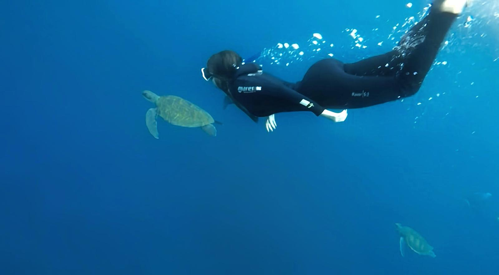

Página Web
HTML + CSS + Javascript.
GitHubIDENTITY
Me interesan la programación y la ciberseguridad, y disfruto analizando cómo funcionan los sistemas para mejorarlos.

PORTFOLIO
HTML + CSS + Javascript.
GitHubConsultas SQL.
GitHubVISION

HOBBIES